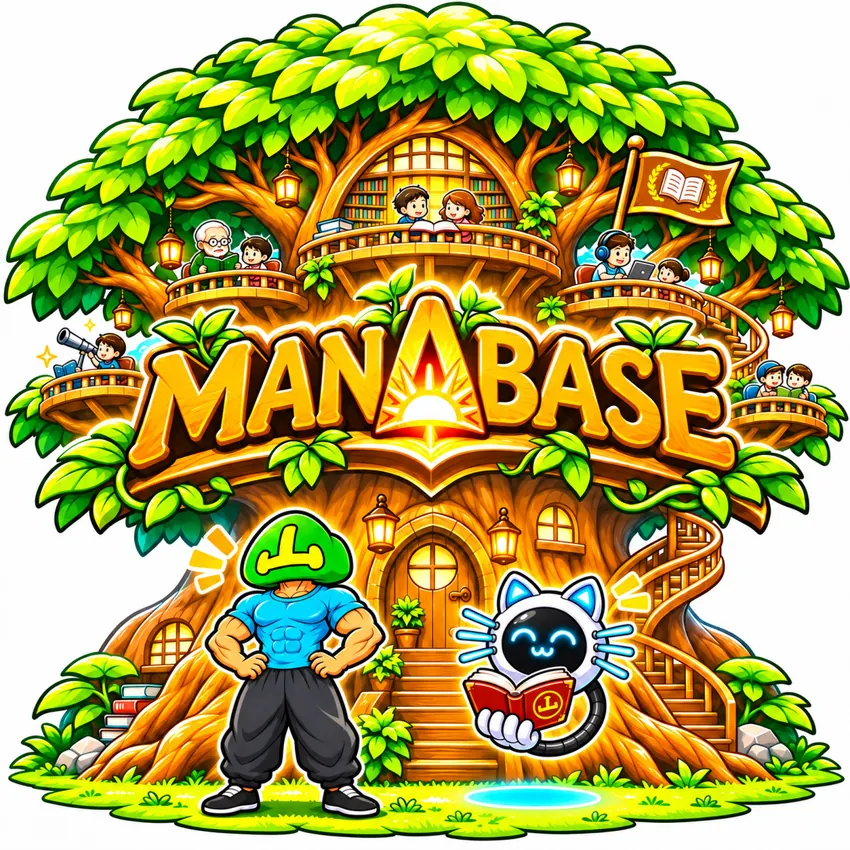

🍕
KIDS BASEひらめきの教室
ピザを分けながら、分数のしくみを楽しく発見！
子どもも、大人も、先生も。好奇心を持って扉を開けば、そこはみんなの学びの基地。遊んで、考えて、発見しよう！
4つの無料体験をはじめる →
年齢や立場を超えて、気になる扉から入ってみよう。
ピザを分けながら、分数のしくみを楽しく発見！
色玉の確率を予想。直感と計算を比べよう。
怪しいメッセージを見抜く力を身につけよう。
学年と教科を選んで、授業の導入を考えよう。
答えを選んだら、理由まで確かめよう。
4等分したピザのうち、1切れ食べたよ。食べた量は全体の何分のいくつ？
色の濃い部分が食べた1切れだよ。
袋の中には赤3個・青2個・緑1個。1個だけ取り出すとき、青が出る確率は？
どの玉も同じ確率で取り出されるとするよ。
届いたSMSを読んで、安全な行動を選んでみよう。
学年・教科を選ぶと、すぐ試せる問いかけと活動例が表示されるよ。
※学年・教科に応じた試作テンプレートを表示します。学習指導要領との適合は単元ごとに要確認。
子どもたちが「えっ、なんで？」と思う問いを用意するよ。
ここは、年齢を問わず学びたい人が集まる場所。学長のYAMAティーチャーと、副学長のルーメが、知る楽しさと考える面白さを届けます。
このページは試験版です。これから体験コンテンツを増やし、学びの基地を育てていきます。